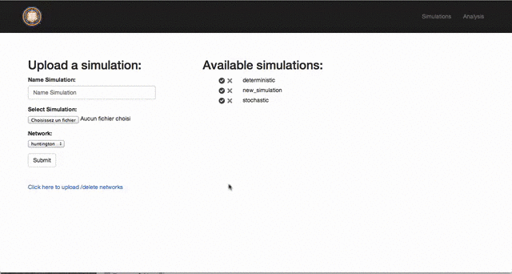
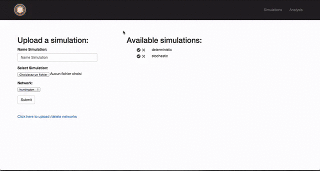

Third Step: Analyze the results¶
| date: | 2014-08-14 16:30 |
|---|---|
| tags: | pointq, simulator |
| author: | Martin Gouy |
Website¶
The last part of the process is to analyze the results of the simulation. To do so, please log into the Point Q Analysis Website .
Upload a new simulation¶
The first step is to upload the output database of the simulator (file_recording_event_db.txt). You also have to upload the xml of the network which was used by the simulation.
Note: A network only needs to be uploaded once. Once uploaded, it can be linked to multiple simulations
Upload a new network:
Upload a new simulation:
